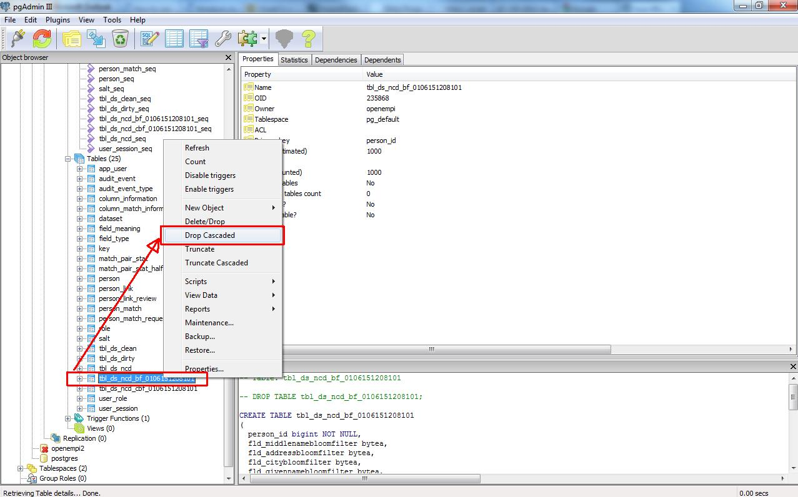
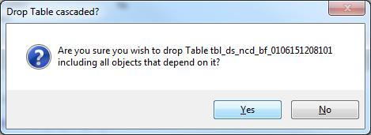
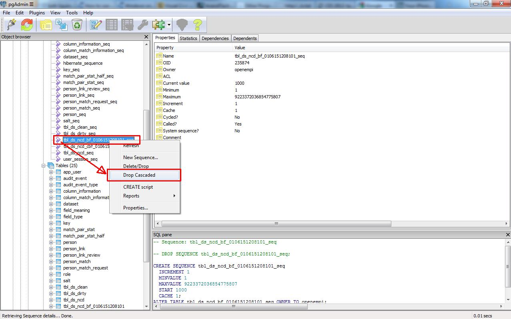
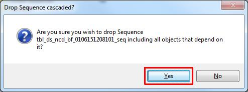

Deleting an existing database schema with pgAdmin III
- Login to openempi database if you haven't done so.
- Please delete extra tables which are created by your
experiments and not part of the standard openempi schema
- Open up Databases/openempi/Schemas/public node.
- Drop all match pair statistics match pair stat half tables, they are named as
tbl_mps_* and tbl_mpsh_*. Right clicking on them and selecting
Drop Cascaded option.


- Drop all sequences of the previously deleted tables by right clicking on them and
selecting Drop Cascaded option.


- Drop all link tables, they are named as tbl_lnk_*. Right click on them
and select Drop Cascaded option.
- Drop all sequences of the previously deleted tables by right clicking on them and
selecting Drop Cascaded option.
- Delete all rows from column_match_information table.
- Delete all rows from person_match.
- Delete all rows from person_match_request.
- Drop all datset tables, they are named as tbl_ds_*. Right click on them
and select Drop Cascaded option.
- Drop all sequences of the previously deleted tables by right clicking on them and
selecting Drop Cascaded option.
- Delete all rows from column_information table.
- Delete all rows from dataset table.